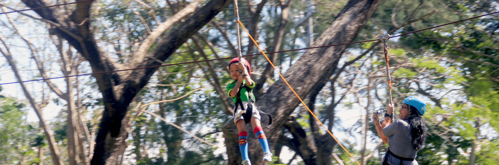
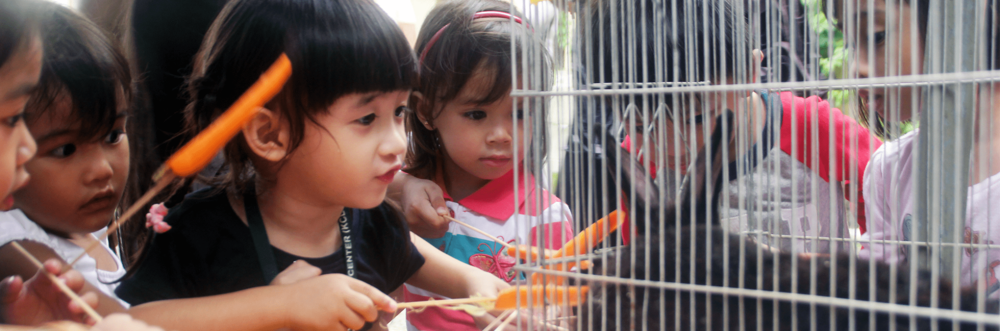
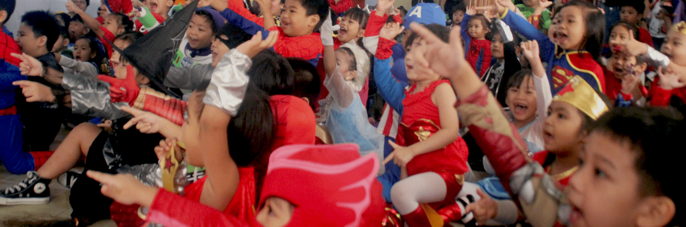

Our Programs
KCLC offers three core programs for children ages 2 to 6 at both Antipolo and Marikina campuses: Early Learning (ages 2–4), Kindergarten (ages 4–6), and Daycare for working parents. Each program uses progressive, child-centered teaching grounded in Dr. Howard Gardner's multiple intelligences.
Find the Right Fit
Every child learns differently. KCLC's programs are built around Dr. Howard Gardner's theory of multiple intelligences, ensuring your child is engaged, challenged, and supported at every stage. Explore our three core programs below to find the perfect match.

Ages 2 - 4 — Your child's first introduction to the joy of learning through play, sensory exploration, and the foundations of reading.

Ages 4 - 6 — A comprehensive curriculum that builds reading mastery, math confidence, and the independence needed for big school.

Ages 2 - 6 — A safe, nurturing environment with structured learning activities, creative play, and balanced meals throughout the day.
Our Approach
KCLC follows a progressive approach rooted in content-based instruction and interactive, integrative methods that are developmentally appropriate for every child. Our curriculum is not a one-size-fits-all model — it is designed to meet each child where they are and take them further.
At the heart of our teaching philosophy is Dr. Howard Gardner's theory of multiple intelligences. We recognize that every child has a unique combination of strengths — linguistic, logical-mathematical, musical, spatial, bodily-kinesthetic, interpersonal, intrapersonal, and naturalistic. Our teachers weave these intelligences into every lesson to ensure that every learner is reached and engaged.
Caring for the Environment and Social Studies are at the core of everything we teach. Children learn to see meaningful connections across different skill areas that flow from the reality of their daily lives, developing not just academic confidence but a genuine concern for their community and the world around them.
With over 14 years of experience across two campuses in Antipolo and Marikina, KCLC has a proven track record of producing confident, independent learners who thrive in big school and beyond.